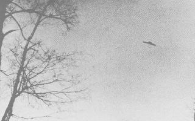
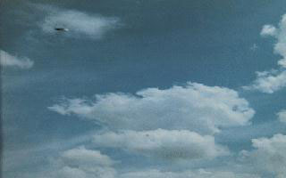
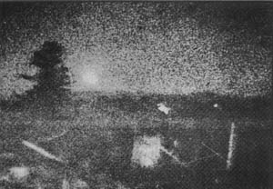

Observation (ci-contre) à Mahwah (USA).

Observation de janvier à Mahwah
Une épaisse couche de nuages gêne la navigation d'un chasseur bombardier F-111 de l'USAF qui vole vers Mobile (Alabama). Au-dessus de la Louisiane, à l'Est de Grand Isle, le pilote pénètre en effet dans une formation nuageuse. Il demande alors au
contrôle régional de Houston (Texas) l'autorisation de prendre de l'altitude. Après
être sorti des nuages, tout s'annonce bien. Le pilote déclare qu'il va dorénavant voler à vue, la visibilité
étant parfaite. On n'en entendra plus jamais parler.
Coral E. Lorenzen fait une visite au siège du NICAP lors d'un voyage sur la côte Est UFO Investigator, 1971-01. Bien que non prévue comme une réunion de travail,
la session touche au futur des 2 groupes et des nouvelles approches possible de l'étude des ovnis "NICAP and
APRO Take Major Step Toward Improved Relations", NICAP UFO Investigator, 1972-06.
Début de la mission Apollo 14. Les
astronautes du module Antares, observent un énorme objet dont les hublots réfléchissent une lumière
très vive alors qu'ils survolent les cratères Landsberg A et C. Ils rapportent une série d'images de cette
expérience Dean, Robert O.:.
La Terre et la Lune tremblent ensemble. Grâce aux sismographes déposés par les équipages Apollo, dont le centre spatial de Houston suit étroitement
les réactions par télémesure, on enregistre des séismes simultanés.
Lancement de la 1ère station orbitale.
Pâques 1500 personnes, dont des journalistes, s'assemblent pour
"l'atterrissage des extraterrestres". Devant l'absence de leur apparition, l'organisateur Paul Solem (contacté par
des vénusiens qui lui avaient annoncé 4 grandes démonstrations dont celle-ci en plein jour) blâme les bulldozers sur
le site d'atterrissage. Il annulera les 3 autres démonstrations.
Un mystérieux objet céleste de taille planétaire, n'entrant dans aucune catégorie connue, est découvert dans
la Constellation du Cygne par des astronomes japonais et américains. On le baptise "Cygne XI".

Photographie le 23 mai en Autriche
Observation (ci-contre) à Deutschlandsberg Steiremark (Autriche).
dans le faubourg de Rosedale (Province d’Alberta au Canada) avec
observation de 3 humanoïdes
Près du pont enjambant le cañon Del Oro (Arizona),
2 promeneurs découvrent le corps de James E. McDonald. Un révolver de calibre 39 se
trouve près de lui, ainsi qu'une note.
A Londres (UK), le comité des assurances Lloyd's se réunit pour
déclarer officiellement perdu corps et biens un navire vapeur de 3750 t, le Kiki, dont le port d'attache est
Chypre, et dont on a retrouvé aucune trace Gaston, P.: "De formidables énigmes sur la mer", chap. 1 de Disparitions
Mystérieuses, 1973, p. 19.
A Javingue (Province de Namur en Belgique)Inforespace: n°12 (1973) - Canadian Ufo Report (1972) et n°7
Eté
A Luçon (Vendée), la mère de M. Simonneau entend un grand bruit. Son fils, par la fenêtre de sa chambre grande
ouverte, voit une lueur bleue d'abord lointaine mais qui s'approche rapidement, en même temps qu'un bruit de
plus en plus intense se fait entendre. Le phénomène, de couleur bleu-néon assez pâle, fatiguant la vue, plus
clair vers le milieu, passe à 10 m du témoin qui distingue une fumée grise qui s'échappe par derrière,
formant une petite queue. A l'avant, il distingue 2 phares ou fenêtres de couleur bleu très foncé et très
brillantes (?) Figuet, Michel &
Ruchon, Jean-Louis: OVNI:
Le premier dossier complet des rencontres rapprochées en
France, Alain Lefeuvre, 1979.
Les astronautes de la mission Apollo 15 se
posent dans la Mer des Pluies.
Suite à la mort de McDonald, un article
paraît dans Astronautics and Aeronautics, décrivant une observation détaillée.
Au Brésil, une pluie de haricots
africains s'abat sur une ferme.
Photographie aérienne au
Costa Rica d'un étrange disque volant par un avion de l'institut géographique volant à 3200 m d'altitude
au-dessus de la région du lac de Cote. En 1989, le scientifique américain Richard F. Haines et l'ufologue Jacques Vallée pourront
procéder à une série d'analyses approfondies et
d'études photométriques sur le négatif noir et blanc original afin de déterminer la nature de l'ovni
photographié.
Au Cambodge, plusieurs groupe des forces spéciales rencontreraient des humanoïdes non humains et parfois leur
vaisseau. Un certain "Joe" témoignera de sa rencontre.
Lors du Congrès International de Biurakan (Arménie) sur la possibilité de
l'existence de civilisations extraterrestres et les méthodes pour communiquer avec elles, des scientifiques
soviétiques proposent de faire exploser des bombes thermonucléaires dans des zones proches de la Galaxie où une
vie intelligente aurait pu se développer afin de signaler l'existence des terriens. Des scientifiques américains
étaient étaient également invités.
4 astronomes de l'observatoire Saint-Michel-de-Provence (Alpes de Haute-Provence) suivent
l'évolution d'un petit disque brillant de couleur jaune orangé dont la présence est confirmée par la
station-radar de Marignane FX 95-2562.
Près de Öjebyn (Nord de la Suède), dans la soirée, un
automobiliste se trouve soudain entouré d'intenses rayonnements lumineux. Les phares de la voiture s'éteignent
et les freins cessent de fonctionner. La pression atmosphérique semble augmenter. Puis les rayons disparaissent
et le conducteur voit un objet sombre décoller d'un champ distant de 1 km. La voiture redémarre. L'objet la suit
pendant environ une minute, puis disparaît vers le sud.
Pensant avoir détecté un cycle de 5 ans dans les observations, le NICAP
prédit qu'il y aura une vague en 1972.
 Photographie d'un ovni australien prise cette année-là
Observation photographiée (ci-contre) en Australie.
Durant de nombreuse semaines, le satellite Eole refuse obstinément de fonctionner le dimanche ! Aucune
explication scientifique valable ne peut être donnée de ces silences.
Des radio-astronomes du NRAO repèrent en provenance de Jupiter une source émettrice qui diffuse des messages
ordonnés, parfaitement rythmés. Cette source avait d'ailleurs été déjà signalée en 1961. Graham Smith,
radio-astronome anglais de réputation mondiale, en se basant sur ces messages en modulation musicale, déclare sans
ambiguïté qu'il s'agit d'une émission comme il n'en a jamais encore été capté ailleurs dans l'espace. Les messages
se poursuivent ainsi pendant une période de 9 h et 56 mn, soit le temps de rotation de la planète Jupiter.
Un nouveau code est établi en ce qui concerne le "téléphone rouge" qui relie Washington au Kremlin. Ce code
devrait éviter tout risque d'alerte atomique, tout malentendu, au cas où des ovnis traverseraient leur espace aérien
mutuel.
A Buryakan (Arménie soviétique), dans un colloque des académies des sciences d'URSS et
des USA, l'un des orateurs déclare : Ce serait deq>égalomanie que de croire que nous sommes les seules
intelligences de l'univers !
La revue Interne de la Gendarmerie Nationale publie un long
article dans lequel se profile la possibilité de l'intervention des gendarmes pour recueillir et rechercher les
observations d'ovnis.
{kind=link}